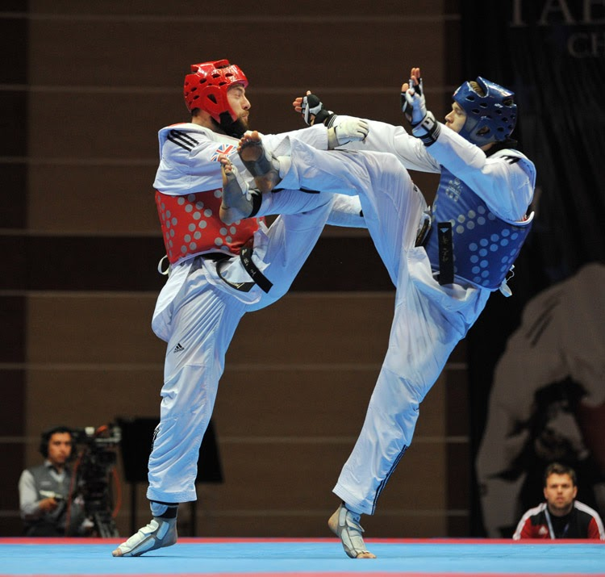

Soy estudiante de ingeniería en computación en la Universidad de Guadalajara, tengo 22 año, me gusta hacer deporte, me gusta practicar Taekwondo, escuchar música en mis tiempos libres y pasar tiempo con mis amigos y con mi familia.
| Nombre del proyecto | Lenguajes | Descripción |
|---|---|---|
| Gestión de alumnos de taekwondo | C++, Sql | Realizar un programa que tenga una base de datos para guardar los datos de los alumnos de una escuela de taekwondo |
| Tienda en línea | C++ | Software que imita una tienda en línea tipo amazon |
| Software de restaurante | C++, Sql | Punto de venta para un restaurante, contiene el menú, compra de clientes y datos de almacén y proveedores |
Aaron Cook

Aaron Arthur Cook (Dorchester, 2 de enero de 1991) es un deportista británico que
compite en taekwondo.
Ganó dos medallas de bronce en el Campeonato Mundial de Taekwondo, en los años 2015 y
2017, y cinco medallas en el Campeonato Europeo de Taekwondo entre los años 2010 y 2018.